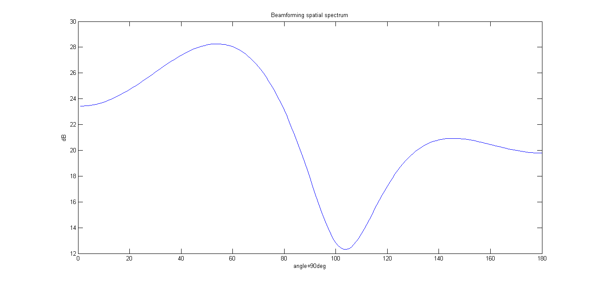
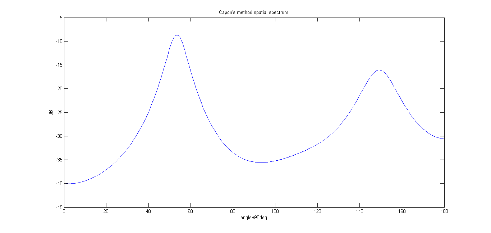

Computing Assignment 3 (Q2)
Ashwin Kachhara, 10d070048
Contents
Data Acquisition
Loading the data from file submarine.mat
load('submarine.mat');
We get the measurements from the six sensors (4096 instances), the distance between sensors and the wavelength of the source.
dl = d/lambda;
Data Processing, Results
We compute the spectra using beamforming and Capon's method. From the graphs we can see that there are 2 peaks implying 2 sources.
phi1 = beamform(X, 180, dl); figure(1) plot(20*log10(phi1)) title('Beamforming spatial spectrum') ylabel('dB') xlabel('angle+90deg') phi2 = capon_sp(X, 180, dl); figure(2) plot(20*log10(phi2)) title('Capon''s method spatial spectrum') ylabel('dB') xlabel('angle+90deg') 
Now, we use the no of sources as input for the Root music and ESPRIT methods
theta1 = root_music_doa(X, 2, dl) theta2 = esprit_doa(X, 2, dl)
theta1 = -36.9553 53.9747 theta2 = -36.9432 53.7314
Conclusion
The two submarines are located at angles of approx -36 degrees and 53 degrees respectively